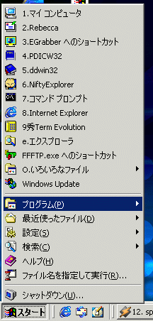
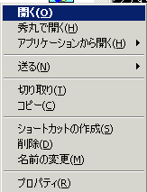
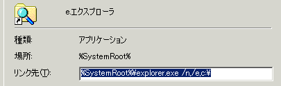

スタートメニューをカスタマイズする 左のビットマップを見て欲しい。僕のマシンで、マウスでスタートメニューをクリックするか、Windowsキーを押した瞬間だ。アプリケーションを使うときに、僕はあまりマウスを使わない。よく使うアプリケーションはなるべくキーボードのみで起動したいものだ。特によく使うアプリケーションについては左のように"スタートメニュー"フォルダのすぐ下に置いてあり、番号を振ってある。こうすることで、CTRL+ESC,番号と2ストロークで目的のアプリケーションを起動することが出来る。 これは、スタートメニューやWindowsのシェルは、キーボードから一文字入力すると、一文字目がそのファイルであるショートカットかフォルダへジャンプするからだ。スタートメニューの場合は、一文字目が入力した文字であるものが一つしかなければ、そのままそのショートカットに対応したアプリケーションが起動するか、フォルダが展開されることを利用したものだ。 下手なランチャーソフトを買うよりはよっぽど使えると思う。何よりも、常駐ソフトを使わない。 |
右クリックでのメニューをカスタマイズ htmlファイルをマウスでダブルクリックすると、ブラウザで表示が出来るのはありがたいのだが、htmlファイルは編集することも多い。そこで右クリックメニューに、秀丸での編集を付け加えてある。操作はレジストリエディタを開き、 HEKY_CLASSES_ROOT\*\shell\openasキー（なければ作る）に、秀丸で作る(&H)というキーを作り、openasの下にcommandキーを作り、そこに "c:\hidemaru\hidemaru.exe" %1 と入力する。こうすることで、右クリックメニューを自由にカスタマイズできる。
|
エクスプローラを既定のフォルダから起動するエクスプローラはツリー表示できて便利なのだか、普通にエクスプローラーを起動すると、僕のWindows2000ではマイドキュメントの中身が表示されてしまう。これはこれで、マルチユーザーアカウントの場合は正しいのだが、個人で使っている場合は、逆に不便だ。コマンドプロンプトから explorer.exe /e,目的のフォルダ と叩いてみよう。目的のフォルダが開いた状態で起動できるはずである。後は開きたいフォルダのショートカットを作って、ショートカットのリンク先に、 c:\windows\explorer.exe /e,目的のフォルダ と入力するだけである。  僕は %systemroot%\explorer.exe /e,c:\ と登録してある。c:\を開くことが一番多いからだ。%systemroot%はWindows2000の環境変数で、システムが入っているフォルダのことであって、要するにスタートメニューの中のもともとのショートカットがそうなっていたのだ。
|
横のコンピュータの覗き方スタートメニューの「ファイル名を指定して実行」で、パス名を指定すると、そのフォルダが開いてくれる。つまり、CTRL+ESC,R,c:\[ENTER]と入力すれば、c:\が開くのだ。マウスでエクスプローラーを開いたり、マイコンピューターから順番にフォルダを開くこともない。ここで、\\コンピュータ名\共有名を指定すると、そこの窓が開く。なお、 explorer /e,\\コンピュータ名\共有名 と叩けば、ツリー付で開く。 ちなみに、WindowsNT/2000の場合はドライブ名＋$で隠し共有が作られており、\\コンピュータ名\c$でマシンの中身をまるまる覗くことが出来る。ただし、管理者権限が必要。 なお、$をつけて共有しておくと、「ネットワーク」アイコンのブラウズを抑制することが出来るが、そういう共有フォルダはこうやって見るわけだ。 |